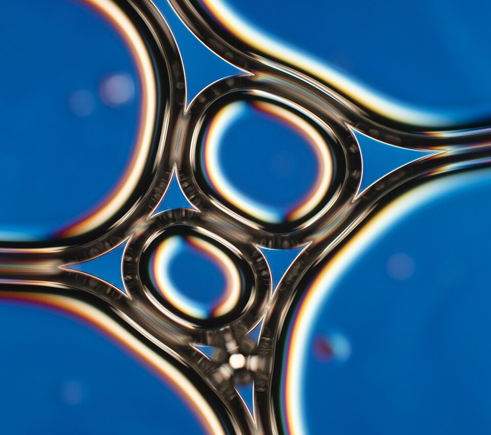

Burbujas apretadas: drenaje, engrosamiento y colapso
La espuma de una cerveza recién servida es alta, blanca y cremosa. Al rato baja, se vuelve más gruesa, con burbujas grandes, y al final desaparece. La espuma del jabón, la crema batida y las claras a punto nieve hacen lo mismo, cada una a su ritmo. Una espuma parece algo simple, gas atrapado en un líquido, pero es un material con una física propia.
El libro Chemistry 2e de OpenStax clasifica las espumas entre los coloides: son gas disperso en un líquido, como la crema batida o las claras de huevo batidas [1]. Pero cuando las burbujas están muy apretadas, la espuma deja de ser un líquido con burbujas y se vuelve otra cosa.

Denis Weaire y colaboradores, del Trinity College de Dublín, explican que el parámetro más importante de una espuma es su fracción de líquido, la parte de su volumen que es líquido [2]. Cuando es muy chica, la espuma es «seca»: las burbujas se aprietan formando celdas poliédricas con caras curvas, que son películas de jabón, y la mayor parte del líquido queda en los bordes de las celdas, los bordes de Plateau [2]. La diferencia entre una espuma seca y una húmeda es de enorme importancia, en la teoría y en la práctica [2].
Weaire y colaboradores resumen las propiedades clave de una espuma en cuatro procesos [2]:
El drenaje es lo que hace que la espuma se seque desde arriba. Según Weaire y colaboradores, un modelo en el que el líquido drena solo por los bordes de Plateau, como un flujo de Poiseuille en canales finos, funciona bien en muchos casos, y lleva a una ecuación para la fracción de líquido, la «ecuación de drenaje de la espuma» [2]. Una de sus soluciones es sorprendente: si se echa líquido de golpe sobre una espuma seca, baja por ella como una onda solitaria [2].
El engrosamiento, en cambio, lo produce la tensión superficial. John Bush, del MIT, explica que el gas se difunde de las burbujas chicas a las grandes, de donde la presión de Laplace es alta a donde es baja [3]. Como las burbujas chicas tienen más presión adentro, se vacían en las grandes, y la espuma se vuelve cada vez más gruesa.
Las pompas conectadas: si conectás con una pajita dos pompas de jabón, una chica y una grande, la chica se desinfla dentro de la grande, porque, más curvada, aprieta más su aire (un razonamiento a partir de la presión de Laplace que explica Bush). En una espuma, el gas pasa de burbuja a burbuja a través de las películas de líquido, y las chicas van desapareciendo.
Una espuma apretada no fluye si no se la empuja con cierta fuerza: Daniel Bonn y colaboradores cuentan las espumas entre los materiales con tensión de fluencia [4]. La crema batida, por ejemplo, tiene una tensión de fluencia de unos 33 pascales [4]. Eso ayuda a entender por qué se sostiene en forma de copo sobre una torta, aunque esté hecha casi toda de aire y líquido (un razonamiento a partir de ese valor). Bonn y colaboradores explican que las espumas se vuelven sólidas cuando las burbujas superan un empaquetamiento crítico: es una transición de atascamiento, como la de los materiales granulares [4].
Un informe de matemáticos de la Universidad de Limerick y otras universidades, hecho a pedido de Diageo, la empresa que produce la Guinness, explica por qué su espuma es distinta [5]. La Guinness Draught se envasa y se sirve con una mezcla de dióxido de carbono y nitrógeno, en vez de solo dióxido de carbono como la mayoría de las cervezas: al servirla se usa una mezcla de alrededor de 21 % de dióxido de carbono y 79 % de nitrógeno [5]. Una ventaja del nitrógeno es que es poco soluble: a 8 °C es 100 veces menos soluble que el dióxido de carbono [5]. Por eso, una vez que se forman, las burbujas se quedan chicas, porque hay poco gas disuelto y crecen despacio, y la espuma queda más fina y «cremosa» [5].
La poca solubilidad del nitrógeno frena también el engrosamiento, porque el gas pasa con más dificultad de una burbuja a otra a través del líquido (un razonamiento a partir del mecanismo de Ostwald). Y las burbujas chicas producen otro fenómeno curioso: en una pinta de cerveza negra se las ve bajar mientras la cerveza se asienta. Eugene Benilov y colaboradores mostraron que eso depende de la forma del vaso: si se angosta hacia abajo, como la pinta tradicional, se forma una corriente que baja junto a la pared y sube por el centro, y arrastra hacia abajo a las burbujas [6].
Lo menos entendido: según Weaire y colaboradores, las espumas estables, quietas y secas se entienden bien en cuanto a drenaje, reología y engrosamiento, pero el colapso sigue siendo bastante misterioso: depende muchísimo de las impurezas, que a menudo actúan combinadas [2]. Para estudiar espumas húmedas sin que la gravedad las drene, se propusieron experimentos en microgravedad [2].
Una espuma es gas encerrado en películas de líquido. Le pasan cuatro cosas: drena, porque el líquido baja por los bordes de Plateau; se engrosa, porque las burbujas chicas se vacían en las grandes; responde como un sólido o como un líquido según cómo se la empuje; y al final colapsa. La espuma de una cerveza con nitrógeno dura más porque ese gas, poco soluble, deja burbujas chicas que crecen despacio.
Pregunta para la comunidad: Serví una gaseosa y una cerveza en vasos iguales y mirá la espuma. ¿Cuál dura más? ¿Las burbujas se ven distintas? ¿Qué parte de la explicación de este artículo podría tener que ver con la diferencia?